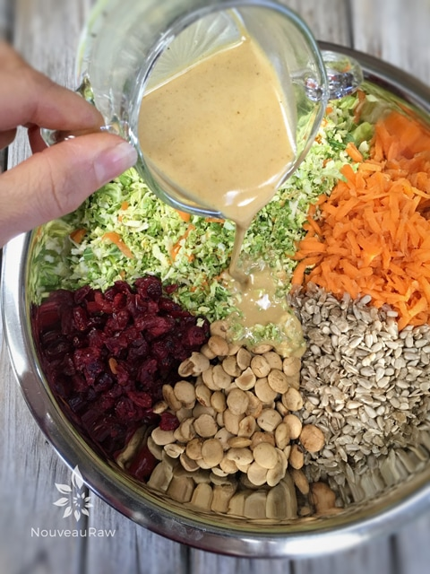
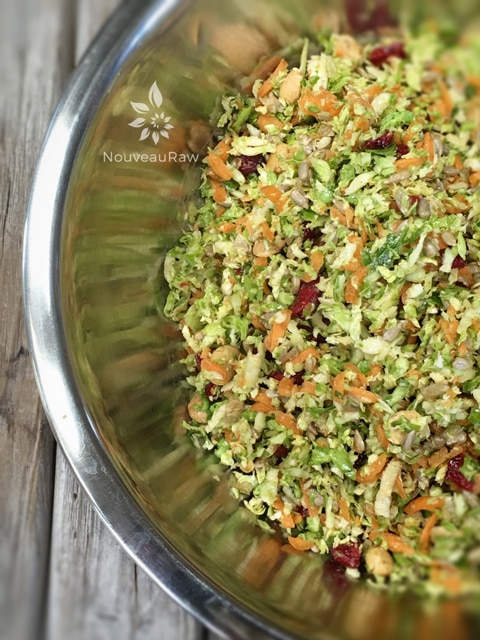

Toasted Sesame Shredded Brussel Sprout Salad

~ raw, vegan, gluten-free, nut-free ~
Some say that Brussels sprouts are the new kale… I am not so sure that I agree, but I will say that Brussel sprouts are popping up in the spotlight more than ever before. In the past, I would hear people refer to them as smelly and mushy.
So, with them being branded with that label, I sort of steered clear of them through most of my adult years. Such a shame really, because I ended up loving them, and those are Brussels-free years that I will never get back.
Raw Brussel sprouts can have a real bitterness to them. The key to avoiding this typical Brussels bitterness is to slice them as thinly as possible and to remove the bottom base of the little sprout.
This can be achieved in several ways… You can use a mandolin but can be tricky because they are odd-shaped, you can use a sharp knife or my favorite way… a food processor! This salad tastes great the day you make it but even better the next day. This gives the Brussels some time to marinate in the dressing, causing them to soften. Enjoy.
Ingredients:
yields 8 cups
Salad:
- 4 cups (340 g) baby Brussel sprouts, base stem, removed, then shredded
- 1 cup (130 g) shredded carrots
- 1/2 cup (75 g ) raw hazelnuts, chopped or Inchi seeds for nut-free
- 1/2 cup (72 g) raw sunflower seeds
- 1/2 cup ( 80 g) dried cranberries, chopped
Dressing:
- 2 Tbsp raw apple cider vinegar
- 1 Tbsp flax or olive oil
- 1 Tbsp toasted sesame oil
- 1 Tbsp raw honey or maple syrup
- 1 Tbsp raw mustard
- 2 tsp raw coconut amino
- 1/2 tsp curry powder
Salad:
- Use baby Brussel sprouts if possible. They have more flavor. Cut off the stem end and place in a food processor, fitted with the “S” blade. Process till broken down to small bites. Place in a large bowl.
- Add shredded carrots, hazelnuts, sunflower seeds, and cranberries. Toss together with hands.
Dressings:
- Whisk together the coconut amino, flax oil, sesame oil, vinegar, honey, mustard, and curry powder. Pour the dressing over the salad and toss to coat.
- Use any liquid sweetener instead of honey to make it vegan.
- Omit the hazelnuts to make this a nut-free recipe.
- Coconut Amino is a soy sauce substitute so feel free to use any other brand if this isn’t available.
- I used flax oil for the health benefits, but olive oil can be used instead.
- This salad tastes even better the next day so make ahead of time and refrigerate overnight if you can.


© AmieSue.com